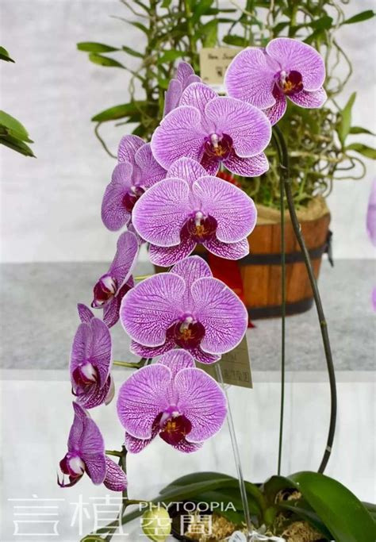

Phalaenopsis Orchid
Familie: Orchidaceae
Descriere: Phalaenopsis Orchid este o plantă perenă cu flori mari, decorative, de diverse culori, care variază de la alb la roz și violet. Aceste flori au o formă delicată și sunt apreciate pentru durata lungă a înfloririi lor.
Îngrijire: Preferă lumină indirectă, dar nu expunere directă la soare. Udarea trebuie să fie moderată, iar solul trebuie să fie ușor umed, fără a se lăsa în apă stagnantă.
Nota: Ideală pentru decorarea caselor sau birourilor datorită frumuseții sale și întreținerii relativ simple.
